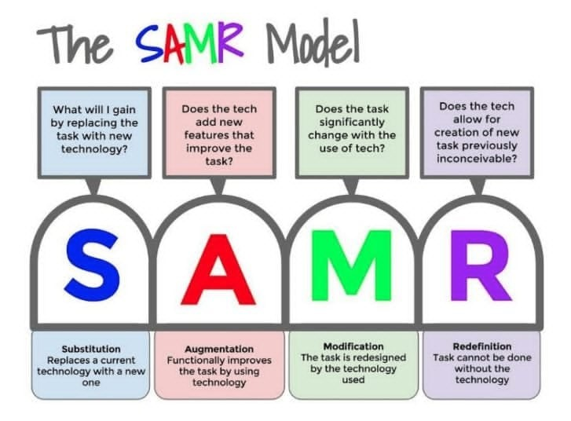
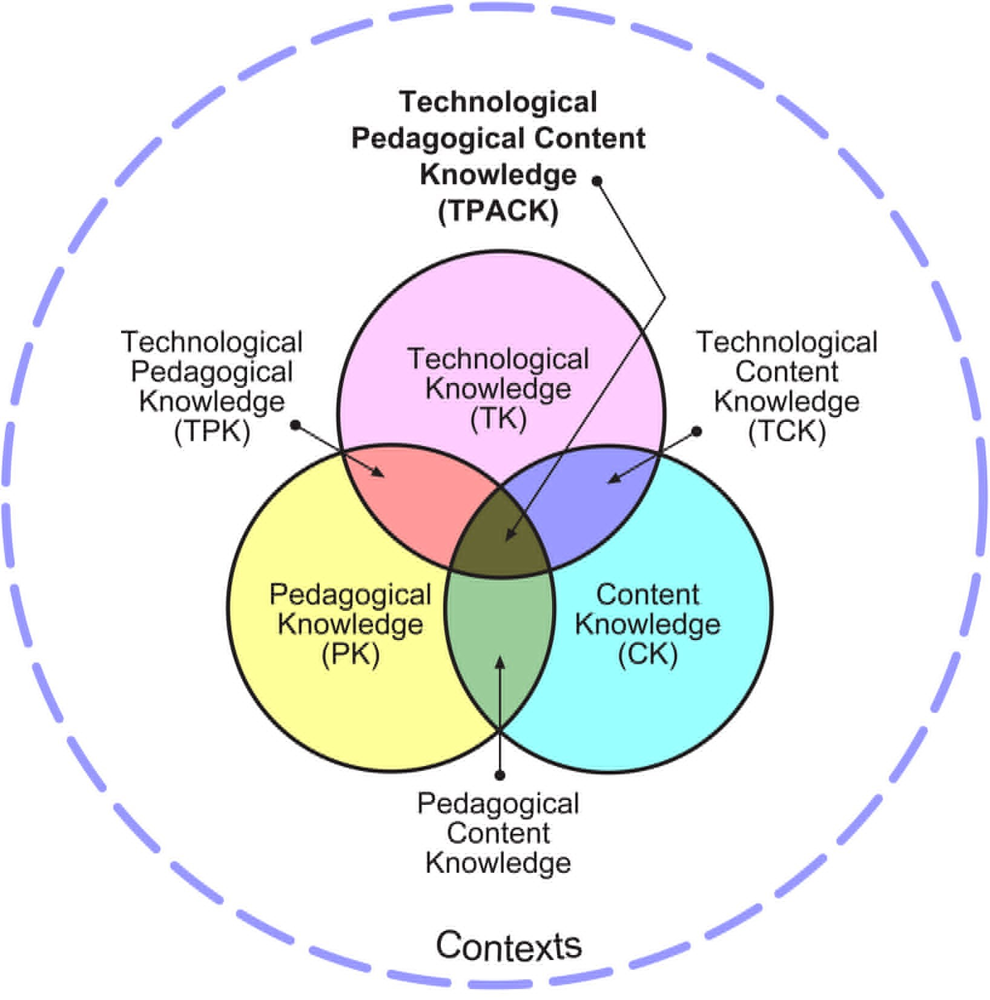
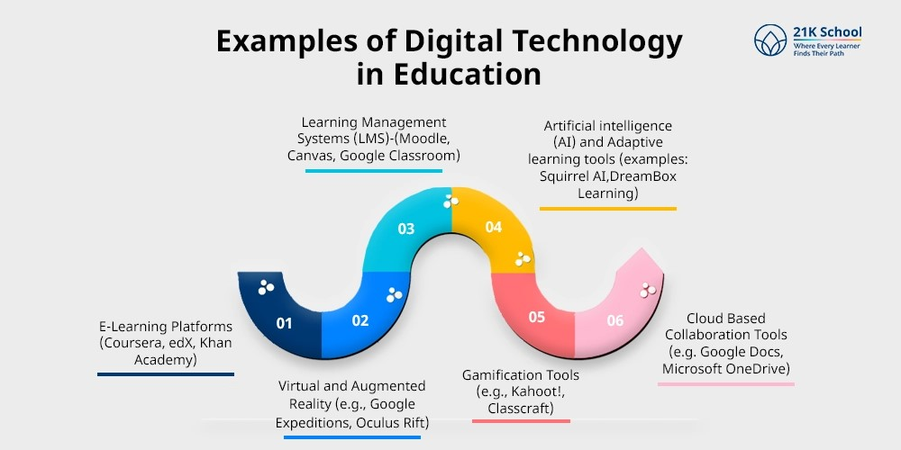
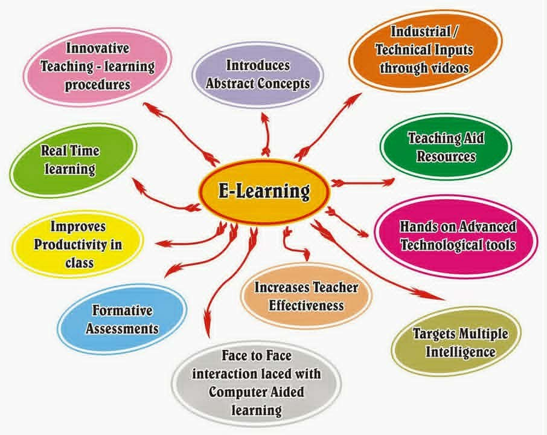

Presentations and Multimedia
Slides, videos, animations, and visual resources help explain lessons clearly and support different learning styles.
Technologies and Tools
These models, trends, and planning practices help teachers choose technology with purpose, manage learning activities, and design instruction that supports all learners.

SAMR Model
The SAMR model is a four-stage framework developed by Dr. Ruben Puentedura to help educators integrate technology into teaching. It moves from simply enhancing tasks to transforming learning, with the goal of increasing student engagement and enabling new learning experiences.

TPACK Framework
TPACK identifies the three core types of knowledge instructors need to integrate technology effectively into teaching: Technology, Pedagogy, and Content.
Content Knowledge: the subject matter being taught.
Pedagogical Knowledge: the methods and practices of teaching and learning.
Technological Knowledge: skill in using traditional and digital technologies.
Digital Learning Tools
Slides, videos, animations, and visual resources help explain lessons clearly and support different learning styles.
Online classrooms, digital libraries, and learning management systems give students access to lessons, resources, assessments, and feedback.
Online quizzes and digital activities make assessment easier and help teachers provide timely feedback to learners.
Screen readers, speech-to-text, and other tools support learners with special needs and make instruction more inclusive.
Shared documents, discussion boards, and online communication platforms help learners work together and exchange ideas.
Universal Design for Learning uses flexible digital materials so all learners can access and understand content in different ways.

Emerging Trends
Definition: Emerging trends in educational technology are new and evolving uses of digital tools, platforms, and innovations that transform how teaching and learning are delivered, experienced, and improved in education.
A mix of face-to-face teaching and digital or online activities that makes elementary learning more flexible, engaging, and accessible through simple apps, videos, and interactive lessons.
Smart software adjusts content, pace, and difficulty based on each student's skills, gaps, and progress while giving personalized feedback and support.
Gamification, virtual and augmented reality, interactive content, cloud tools, and collaborative platforms make learning more active, immersive, and connected.
The future of educational technology focuses on personalization, immersive experiences, data-driven instruction, equity in access, and seamless integration into everyday teaching.
Lesson Planning
Definition: Technology-enhanced lesson planning is the process of designing, organizing, and preparing lessons by integrating digital tools and resources to make teaching more effective, meaningful, and aligned with learning goals.
Integrating objectives and activities: align technology use directly with what students must learn.
Designing learner-centered lessons: plan around students' needs, interests, and participation.
Motivation and active learning: use games, multimedia, collaboration platforms, and interactive tasks to encourage participation.
Micro teaching with technology: practice short, focused technology-integrated lessons before using them in full classroom instruction.
